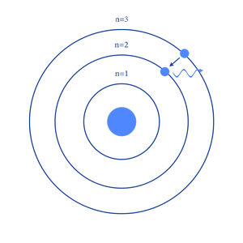
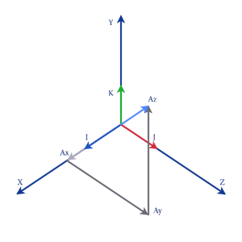
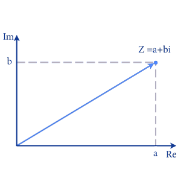
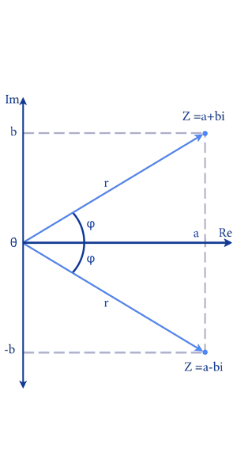

دالة ديراك(Dirac function)
دالة ديراك أو موجه ديراك هي دالة رياضية تستخدم في الرياضيات والفيزياء، وهي معرفة بأنها دالة موجودة في الفضاء الموجي الذي يصف حالات الطاقة للجسيمات الكمية.
تُستخدم دالة ديراك في حل معادلات الفيزياء الكمية والتحليل الرياضي، حيث تُعد أساسية في العديد من التطبيقات مثل حساب التحولات اللحظية، ودراسة التشوهات الفيزيائية والعديد من التطبيقات الأخرى.
لمعرفة كيفية تمثيل دالة ديراك في الحاسوب الكمي
كيفية استخدام
bra-ket algebra ket: الشرط البدائي (الحالة عند مغادرة المصدر)
bra: تشير إلى الشرط النهائي (المكان او الحالة التي يراد حساب احتمال تواجد الجسم فيها)
\(|〈bra|ket〉|^{2}=x\) احتمال وجود الالكترون في مكان ما
\(〈Particle Arrive (xn) | Leave Source〉\)
فعلى سبيل المثال و التوضيح اذا اردنا ان نحسب احتمال انتقال الالكترون من المدار رقم 3 الى المدار رقم 2 وان يطلق فوتون (ضوء)
حيث ان الالكترون اذا اكتسب كم من الطاقة انتقل الى مدار اعلى فأذا تواجد الالكترون في المدار الثاني و اكتسب كما من الطاقة انتقل الى المدار الثالث و بعد مرور الوقت يرجع الالكترون الى مداره الاصلي و يطلق كما من الطاقة كما هو موضح في الصورة ادناه

من خلال استخدام \(bra-ket\) \(algebra\)
يمكننا ايجاد هذا الاحتمال (انتقال الالكترون من المدار الثالث الى المدار الثاني)
ويمثل على هذا الشكل
\(|〈n2|n3〉| ^{2} = x\)
و هذه المعادلة بعد عملية الرصد اي انك تحاول حساب احتمال اتقال الالكترون الى المدار الثاني ويعني بأن المكان الذي تنوي حساب احتمال التواجد فيه معلوم
اما اذا كان الجسم غير مرصود اي في حالة التراكب الكمومي (\(Superposition\)) أو كما يطلق عليها البعض شبح ديراك
فتمثل على صورة \(∣ket〉\)
وتساوي جميع الاحتمالات الممكنة قبل عملية الرصد
فمثلا
\(∣s〉=∣Down〉+∣Up〉\)
\(∣s〉=∣←〉+∣→〉\)
\(∣s〉=∣↑〉+∣↓〉\)
\(∣s〉= ∣x1〉+∣x2〉+∣x3〉+∣x4〉∣xn〉\)
ولا تعني بأنها تمثل فقط احتماليا انما تعني جميع الحالات الممكنة اي اكثر من احتماليا
تمثيلها بمتجهات و مصفوفات
اكتشف ديراك انه في العالم الدون ذري بأمكانك وصف حالة الاجسام قبل القياس على شكل متجه ولكن يحتوي على رقم تخيلي
في الوضع الطبيعي او مثلما تعلمنا يمكن وصف متجه ما على شكل مصفوفة

في هذه الحالة متجهة يمكننا حساب هذا المتجه عن طريق
\(op= xi + yj + zk\)
حيث \(i\) , \(j\) , \(k\) مصفوفات وحدة
\(i\) = \(\begin{bmatrix}1\\0\\0\end{bmatrix}\) \(j\) = \(\begin{bmatrix}0\\1\\0\end{bmatrix}\) \(k\) = \(\begin{bmatrix}0\\0\\1\end{bmatrix}\)
ومن خلال تطيق المعادلة السابقة \(op=xi+yj+zk\)
\(=\) \(x\begin{bmatrix}1\\0\\0\end{bmatrix}\) \(+\) \(y\begin{bmatrix}0\\1\\0\end{bmatrix}\) \(+\) \(z\begin{bmatrix}0\\0\\1\end{bmatrix}\)
\(op= \begin{bmatrix}x\\y\\z\end{bmatrix}\)
هذه في الوضع الكلاسيكي اما في عالم ميكانيكا الكم بأمكانك تمثيل حالة الجسيم قبل القياس بمصفوفات ولكن تحتوي على عدد مركب (Complex number)
و يمثل هذا المتجه في (complex_plane)

Re : ( is the real axis) الاحداث الحقيقي
Im : (is the imaginary axis) الاحداث التخيلي
Z : complex vector space
i = \({\sqrt {-1}}\)
و تمثل على شكل مصفوفة كما هو موضح
\(∣a〉=\begin{bmatrix}a{1}+ib{1}\\ a{2}+ib{2}\\ a{3}+ib{3}\end{bmatrix}\)
الاتحاد المركب (the complex conjugate)
يتم تكوين الاتحاد المركب (complex conjugate)عن طريق تغيير الإشارة بين المكونين الحقيقي والخيالي للعدد المركب.

حيث a هو المكون الحقيقي و bi هو المكون التخيلي ، يكون المُقارن المركب \(\overline{z}\) لـ \(z\) هو:
\(\overline{z}=a-ib\)
و يمثل الاتحاد المركب (complex conjugate)
\(\overline{z}\) = \(〈bra|\)
\(∣a〉=\begin{bmatrix}a{1}+ib{1}\\ a{2}+ib{2}\\ a{3}+ib{3}\end{bmatrix}\)
\(〈a| =\begin{bmatrix}a{1}-ib{1}&a{2}-ib{2}&a{3}-ib{3}\end{bmatrix}\)